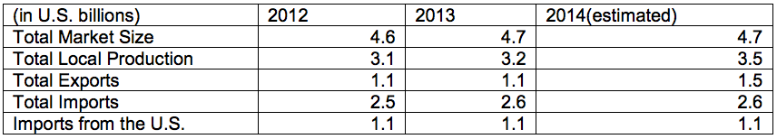

In 2013, the Government of Brazil (GOB) published the National Defense White Book (LBDN) which clarifies Brazil’s defense activities and updates the country’s 2008 National Defense Strategy and National Defense Policy. The LBDN is a key document, in which the Brazilian defense authorities describe and prioritize Brazilian defense related projects. According to the Ministry of Defense, resources for funding and investment for the Armed Forces have grown 103% in the past six years. Since 2008, when the GOB established the National Defense Strategy (END), the amount has increased from R$9.6 billion (US$4.2 billion) to R$19.6 billion (US$8.5 billion) as of 2014. Despite this fact, the Armed Forces are not receiving adequate budgets in 2014 to continue with their programs.